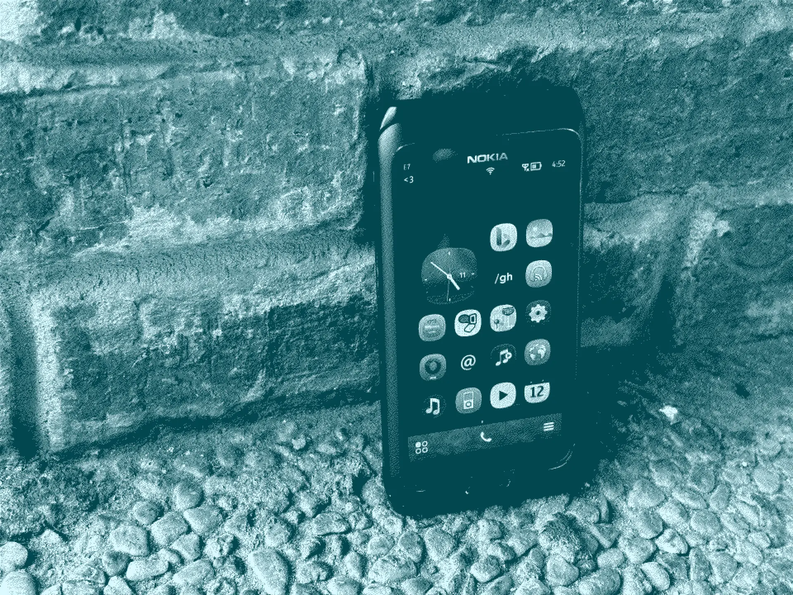

Nokia E7 was released in 2010. People say that it was long obsolete, but for vintage phone collectors, this is a gem. And thanks to those passionate people, Nokia E7 is still rocking well in 2026, with some hacks and mods. I would like to share what I have done to my phone and the apps I am using to make it partially usable in today's world.
Disclaimer: I am not including ALL the games I installed in the list of apps. I only include one game that is newly made on Symbian.
Delight | Link
IMPORTANT: Please install the TLS 1.2 patch. Following the guide here, credits to nnproject.
What's improved after installing the TLS patch:
² Included in the themes folder
FeedsAutomatic updates options.SaveVia browserhttp://s60tube.io.vn/Video playbackURL prefixhttp://s60tube.io.vn/videoplayback?v=simpletranslate.orgGoogle Translate or LibreEnabledThere are some passionate communities/group chats about Symbian that are still around and active, and I would like to name a few.